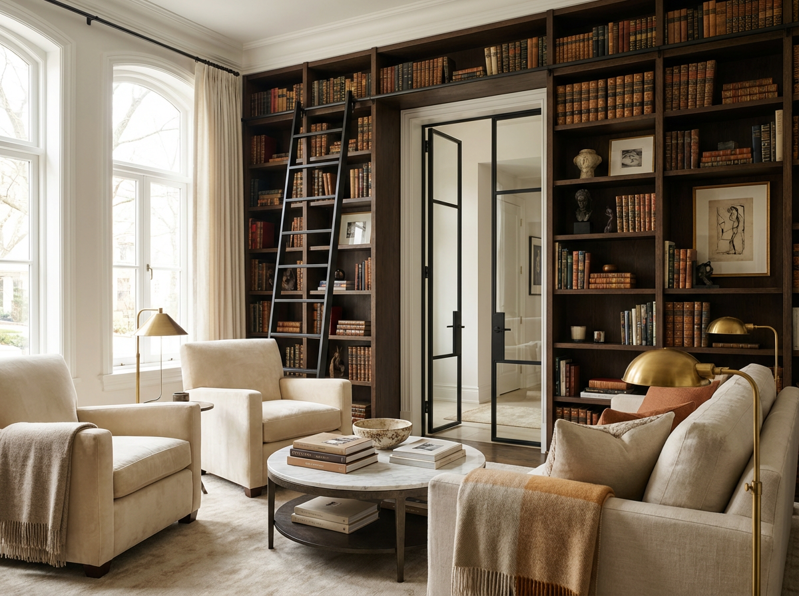

Kraków — meble na wymiar
Meble na wymiar Kraków
Cimer Studio projektuje meble na wymiar dla klientów prywatnych, architektów wnętrz oraz pracowni stolarskich w Krakowie i okolicach.
Specjalizuję się w projektowaniu kuchni, garderób, bibliotek, zabudów ściennych, mebli wolnostojących oraz indywidualnych rozwiązań dopasowanych do konkretnego wnętrza.
Łączę doświadczenie warsztatowe z projektowaniem wnętrz, dzięki czemu meble są nie tylko estetyczne, ale również logiczne konstrukcyjnie i możliwe do wykonania.
Powrót do strony głównej